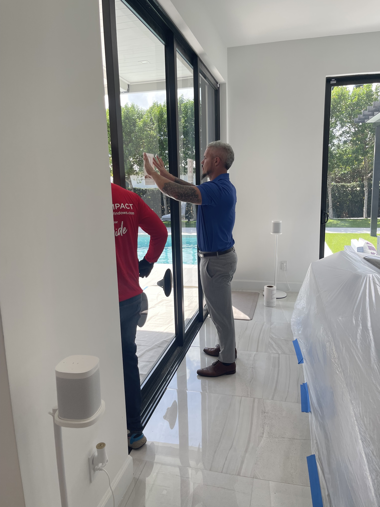

About Statewide
Founded in 2015 by John Dyda, Statewide has become a recognized leader in home improvement and hurricane protection. With over 20 years of experience, John built a team dedicated to quality workmanship and customer satisfaction.
Leadership and Growth
In 2024, Dominique joined Statewide Windows & Doors, helping shape business strategy, capital allocation, and liquidity management. His leadership focuses on optimizing workflows, ensuring regulatory compliance, and driving profitability.
The partnership between Dominique and John Dyda forms a strong foundation for Statewide’s continued growth and long-term success.
